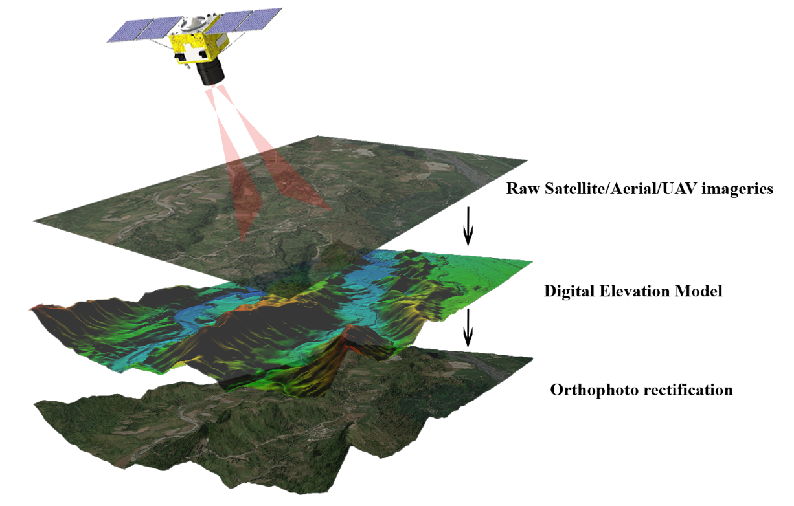

01 · PREPARE
Imagery and control review
Review image sets, naming, overlap and available control information before production and flag gaps that could affect completeness.

We support photogrammetry production workflows using client-supplied aerial or terrestrial imagery and agreed project controls. Processing may include image preparation, reconstruction review, orthophoto outputs and elevation products for mapping and engineering use.

POINT CLOUD ENGINEERING DATA GIS INTELLIGENCEPhotogrammetry deliverables depend on image coverage, overlap, image quality, camera information and available control. We align the processing workflow with the intended map scale, ground sampling distance and downstream use.
Review image sets, naming, overlap and available control information before production and flag gaps that could affect completeness.
Support image alignment, dense reconstruction and orthomosaic or elevation-product preparation within the agreed software workflow.
Check completeness, seam areas, obvious distortions, coordinate information and file naming against the delivery checklist.
Photogrammetry reconstructs three-dimensional information from overlapping images. Output quality depends on image sharpness, overlap, camera geometry, surface texture, control and processing settings.
Detect and match image features, estimate camera positions, and review alignment quality before dense reconstruction. Weak overlap, blur or repetitive textures can create gaps or distortions.
Generate a dense point cloud or mesh, then prepare DSM/DTM products where the source data and terrain conditions support them. Water, shiny surfaces and vegetation can be difficult to reconstruct reliably.
Produce georeferenced orthomosaics, review seams and visible artifacts, confirm coordinate reference and resolution, and document agreed checks. GCPs and independent checkpoints should be used as required by the project accuracy plan.
Overlapping source imagery, camera information when available, coordinate reference, ground-control/checkpoint files where required, target resolution, output format and the acceptance criteria for the final products.
Illustrative outputs from related geospatial workflows. Final deliverables are agreed to the project specification.


GeoProcess Consulting provides processing support; aerial image acquisition and field surveying are not implied by this service page.